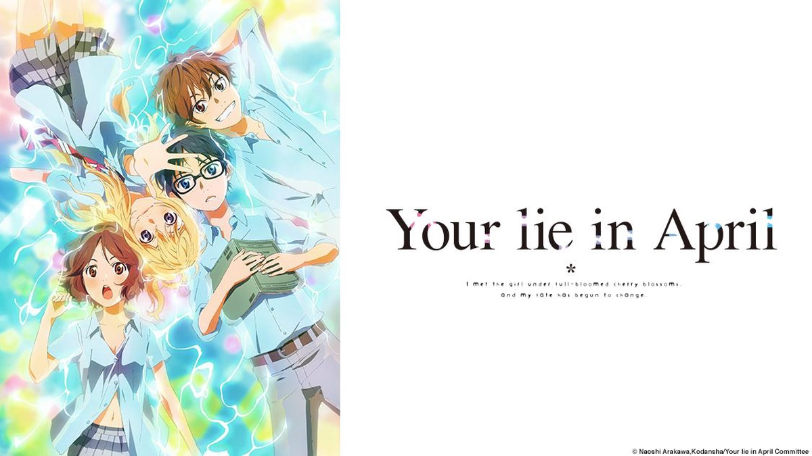

About

 This webpage is dedicated to selecting what the best Anime is of the ones I currated. I have not watched every one of these shows. Namely One Piece because it has been running for 30 years with almost
1100 episodes. However, I know enough of the genre to understand what has had incredible influence and quality. But to understand what is the best you must look at the origins.
Astro Boy is generally considered the first modern anime. It was release in the 1960s with critical aclaim. The artstyle of Astro Boy is the roots of what modern anime originates from. As the genre
pushed forward, more and more are release to instant acclaim. A recent one is Spy X Family. With amazing visuals and the clear influence of Mr. and Mrs. Smith. It is a zanny spy thriller, a rare
concept for anime. No matter if the best is the one that is the oldest, ran the longest, or the most recent hyped one, the best anime is whatever the viewer enjoys the most at that current moment.
This webpage is dedicated to selecting what the best Anime is of the ones I currated. I have not watched every one of these shows. Namely One Piece because it has been running for 30 years with almost
1100 episodes. However, I know enough of the genre to understand what has had incredible influence and quality. But to understand what is the best you must look at the origins.
Astro Boy is generally considered the first modern anime. It was release in the 1960s with critical aclaim. The artstyle of Astro Boy is the roots of what modern anime originates from. As the genre
pushed forward, more and more are release to instant acclaim. A recent one is Spy X Family. With amazing visuals and the clear influence of Mr. and Mrs. Smith. It is a zanny spy thriller, a rare
concept for anime. No matter if the best is the one that is the oldest, ran the longest, or the most recent hyped one, the best anime is whatever the viewer enjoys the most at that current moment.
Gallery
These are some of the best anime. I have not watched every single show known to man but I have watched enough and know enough to understand that these few I selected are incredibly influential and pushed the genre forward.

Cowboy Bebop (1998-1999) |
Full Metal Alchemist: Brotherhood (2009-2010) |

Naruto (2002-2007) |

Your Lie in April (2014-2015) |

One Piece (1999 - current) |
Dragon Ball Z (1989-1996) |
Contact
Please fill out the form to the best of your abilities. This is not a fair comparison by any means. These works are of varying genre and the only thing that ties them together is their critical acclaims.
What is the best Anime Listed?